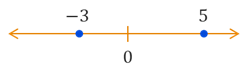
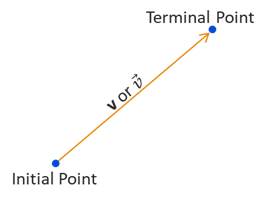
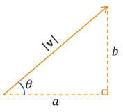
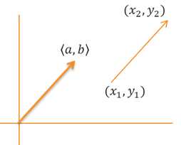

Vectors
Polar, Parametric, & Vectors
Polar, Parametric, & Vectors
At some early point in your mathematical journey, you learned about Real numbers and how we can plot them on the Real number line. The magnitude of the a number determines its distance from the origin, which we also defined as its absolute value, and the sign of the number determines the direction from the origin (negative to the left, positive to the right). So, the Real number \(-3\) is \(|-3| = 3\) units to the left of the origin while the Real number \(5\) is \(|5| = 5\) units to the right of the origin. When discussing Real numbers in context of vectors, we will often refer them them as scalar quantities. So both \(-3\) and \(5\) can be described as scalars.
Perhaps the most simplistic definition is that a vector is a quantity involving both magnitude and direction. The difference between a vector and a scalar is that a scalar is a 1-dimensional quantity along the Real number line while a vector consists of 2 or more dimenions. Think of a vector as the distance and direction that one must travel from one point to another point. In the illustration below, we see two points which we call the initial point and the terminal point. A vector is the arrow, or ray, drawn from the initial point to the terminal point. When using variables to represent vectors, the convention is that we use a bold face letter or an italicized letter with an arrow above it. As illustrated below, we can express a vector variable as either \(\bf{v}\) or \(\vec{v}\), which distinquishes vector quantities from scalar quantities such as \(x\) or \(y\). We will limit ourselves to 2-dimensional vectors in this course, but you will explore 3-dimensional (or higher) vectors in future math or science courses.
Vectors are an important mathematical topic that are used in many fields, including engineering, graphic design, and computer science. But why are we learning about them in trigonometry? Well, because we can describe vectors using right-triangle trigonometry. We can break a vector apart into its horizontal and vertical distances, which we refer to as the horizontal and vertical components. In the illustration below, we form a right triangle using vector \(\bf{v}\) as the hypotenuse, horizontal side \(a\) and vertical side \(b\). The lengths of sides \(a\) and \(b\) are related to the length, or magnitude, of \(\bf{v}\) by the Pythagorean Theorem. We can also consider the acute angle \(\theta\) formed by the vector and the horizontal side.
A vector is a multi-dimensional quantity of magnitude and direction that can be expressed as \(\textbf{v} = \left< a,b \right>\) in its component form where \(a\) is the horizontal component and \(b\) is the vertical component.
Using the Pythagorean Theorem and SOHCAHTOA, we get the following relationships.
Don't confuse the vector notation brackes \(\left< \, \right>\) with coordinate parenthesis \(( \, )\).
It is worth noting that position is not part of the vector definition. A vector is only defined by its magnitude and direction. This means that two vectors are equal if they have the same magnitude and direction, meaning they have the same length and are parallel. In the illustration below, we see two vectors that have the same length and are parallel. One vector has initial point \((x_1,y_y)\) and terminal point \((x_2,y_2)\), while the initial point of the other vector is at the origin. Since both vectors have the same length and are parallel, they are equal to each other. They have the same horizontal compoment \(a\) and vertical component \(b\). That also means that the vector \(\left< a,b \right>\) has a terminal point at \((a,b)\).
.">©2025 M4thG33x (new window) Some Rights Reserved.